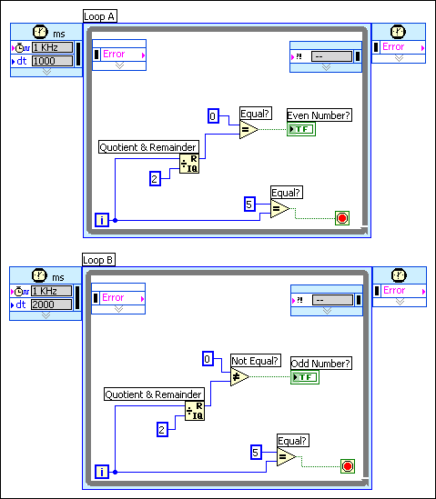

Open example�
Open example�
 Find related examples
Find related examples
To configure the way a Timed Loop executes, use the Configure Timed Loop or the Configure Timed Loop with Frames dialog box. To display these dialog boxes, double-click the Input node or right-click the node and select Configure Input Node from the shortcut menu. You can use these dialog boxes to specify a timing source, set a period, and configure advanced options.
You also can wire data to the Input node to configure the options of a Timed Loop. By default, the Input node of a Timed Loop does not display all of the available input terminals. You can resize the Input node or right-click the node and use the shortcut menu to display hidden terminals.
The following list provides additional information about using a Timed Loop.
The following list provides additional information about using a Timed Loop with frames.
Refer to the labview\examples\Structures\Timed Loop\Timed Loop.lvproj for examples of using Timed Loops.
Open example�
Find related examples
Double-click the Right Data node of the current frame or right-click the node and select Configure Input Node from the shortcut menu to display the Configure Next Frame Timing dialog box. You can use this dialog box to set a start time, a priority, deadline, and a timeout for the next frame.
The start time specifies the time the next frame executes. You must specify a start time value relative to the start of the previous frame in absolute units of the frame timing source. Enter a value in the Start text box to specify a start time.
You also can use the input terminals of the Right Data node of a frame to dynamically configure the options for the next iteration of a Timed Loop or to dynamically configure the options of the next frame. By default, the Right Data node of a Timed Loop frame does not display all of the available input terminals. You can resize the Right Data node or right-click the node and use the shortcut menu to display hidden terminals.
The period is the length of time between iterations of a Timed Loop specified in absolute units of the structure timing source.
The Timed Loops in the following block diagram use the default 1 kHz timing source. The period (dt) for Loop A is 1,000 ms and the period for Loop B is 2,000 ms, which means Loop A executes every second and Loop B executes every two seconds. Both Timed Loops stop executing after six iterations. Loop A stops executing after six seconds, and Loop B stops executing after 12 seconds.

The subdiagram of a Timed Loop or subdiagrams of a Timed Loop with frames must complete execution before the period specified for each iteration. If the subdiagram or subdiagrams do not complete execution before the specified period, the Timed Loop returns TRUE in the Finished Late? [i-1] output of the Output node or the Finished Late? [i-1] output of the Left Data node in the first frame of subsequent iterations.
If the subdiagram of the Timed Loop or subdiagrams of a Timed Loop with frames complete execution before the period of the loop, the Timed Loop sleeps and allows other code or structures to execute on the block diagram.
 |
Note��Do not set the period of a Timed Loop to 0. National Instruments does not support applications that contain Timed Loops with periods of 0 because these periods cause undefined application behavior. If you need a loop that runs as fast as possible combined with the priority execution features of a Timed Loop, use a While Loop inside a Timed Sequence structure instead. |
Occasionally, an iteration of a Timed Loop might execute later than the time you specified. The mode of a Timed Loop determines how the loop handles any late executions. Use the options in the Action on Late Iterations section of the Configure Timed Loop or Configure Timed Loop with Frames dialog box to specify the mode a Timed Loop uses to handle the late execution of a Timed Loop iteration. You also can use the Mode input of the Input node to specify the mode for a Timed Loop.
You can handle the late execution of a Timed Loop in the following ways:
For example, if you set a Timed Loop with a period of 100 ms and an offset of 30 ms, you expect the first loop iteration to execute 30 ms after the first timing source starts running and in multiples of 100 ms after that�at 130 ms, 230 ms, 330 ms, and so on. However, the first execution of the Timed Loop might occur after 240 ms have elapsed. Because other Timed Loops or hardware devices might already be running at the schedule you specified, you can align the late Timed Loop with the already running global schedule, which means the Timed Loop can align itself as quickly as possible with the schedule you specified. In this case, the next Timed Loop iteration would run at 330 ms and continue to run in multiples of 100�at 430 ms, 530 ms, and so on. If aligning the Timed Loop with other Timed Loops or other hardware devices is not important, the Timed Loop can run immediately and use the current time as its actual offset. In this case, the subsequent loop iterations run at 240 ms, 340 ms, 440 ms, and so on.
If the Timed Loop is late, it might miss data other Timed Loops or hardware devices generate. For example, if the Timed Loop misses two iterations and some of the data from the current period, a buffer can hold the data from the missed iterations. You can configure the Timed Loop to process the missed data before it aligns with the schedule you specified. However, a Timed Loop that processes the missed iterations causes jitter, which is the variance between the loop cycle time and the time you specified. If you do not want to process the missed data, the Timed Loop can ignore older data in the buffer that the loop iterations missed and process only the latest data, such as the data available at the next period and the subsequent iterations.
By default, the Timed Loop discards any data generated during missed iterations and maintains the original schedule. To display this mode setting, the icon for the Mode input of the Input node appears with a D for discard and an M for maintain. Remove the checkmark from the Discard missed periods checkbox in the Configure Timed Loop or Configure Timed Loop with Frames dialog boxes to process data any missed or late loop iterations generate. To display this mode setting, the icon for the Mode input of the Input node appears with P for process. Remove the checkmark from the Maintain original phase checkbox in the Configure Timed Loop or Configure Timed Loop with Frames dialog box to configure the Timed Loop to execute on a new schedule based on the first iteration of the Timed Loop.
Use the Mode input of the Input node to configure the mode of a Timed Loop. Right-click the Mode input and select Create�Constant or Create�Control from the shortcut menu to create an enumerated constant or control. You can use this constant or control to select a mode.
Use the Mode input of the Input node to programmatically change the mode of a Timed Loop or maintain the configuration of the modes from the Configure Timed Loop dialog box. Select No Change in the enumerated constant or control to maintain the current mode configuration or select an option to handle any late or missed iteration of the Timed Loop.
Refer to the Timed Loop Mode VI in the labview\examples\Structures\Timed Loop for an example of setting the mode for a Timed Loop.
Open example�
Find related examples